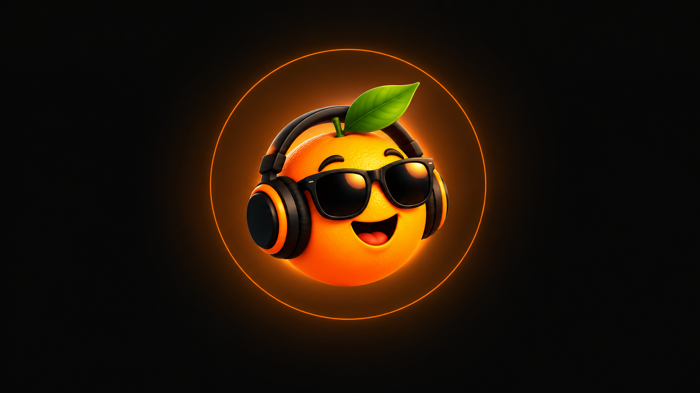

AI Powered Vocal Analisys & Coaching
📂 Subir mídia
🎙️ Ou grave agora
Nome da gravação
📂 Subir um áudio existente
🎙️ Ou grave agora
Carregando…
📂 Subir gravação (voz + violão)
🎙️ Ou grave agora
✨ Ou descreva o que você quer (a IA escolhe as opções acima)
Esta avaliação mapeia sua voz: extensão, tessitura e classificação vocal. O professor vai usar esse perfil em todas as análises da aba de Estudo.
Sua voz é
Cante a nota mais grave que conseguir, sustentando por 3 segundos.
Cante a nota mais aguda confortável, sustentando por 3 segundos.
Cante uma nota no seu tom confortável e sustente por 5 segundos.
Deslize a voz do grave ao agudo e volte, sem pausas.
Cante uma frase de uma música que você gosta, com voz natural.
| Análise | Data | Nota | Desvio (cents) | Tendência | % Afinado |
|---|
Letra com cifras e seções
Use # pra marcar seções (Verso, Refrão, Ponte...) e [Am] pra cifras.
📂 Subir mídia
Converter para (pode marcar mais de um)
Escolha os efeitos manualmente, ou peça pra Laranjinha no Estúdio interpretar um comando em texto livre.
Voz para editar
🎙️ Ou grave agora
Efeitos
🤖 Ou descreva o que você quer, em português
Escreva o tema, escolha o estilo, e deixe a IA compor a letra e o prompt musical pra você.
Suba ou grave um trecho da sua voz (opcional, fica disponível pra você usar como referência).
🎙️ Ou grave agora
Prompt em inglês, pronto pra colar em geradores de música por IA (Suno, YuE, MusicGen...).